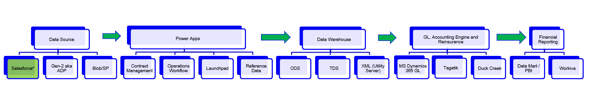
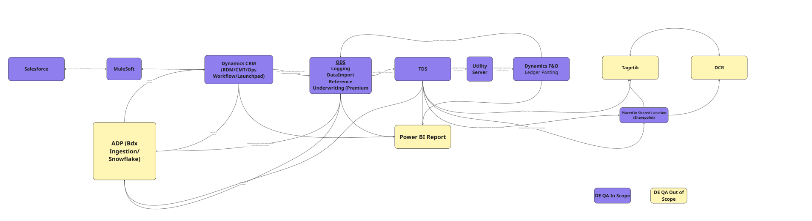

Related Confluence: Automation Testing Strategy for End-to-End Workflow · QA Automation Framework – Complete Workflow Guide · Repository: GitHub (E2E Automation Framework) · Recommended tool for QA: Cursor IDE.
Source: docs/planning/Month-End-Close-Process.pptx
What it is
The month-end close is a critical, recurring operational cycle where Accelerant processes, validates, and reconciles all financial data across multiple systems, regions, and entities — culminating in consolidated financial statements for that month. It runs at the end of each month and involves executing a sequenced set of stored procedures that generate CSV files consumed by downstream finance, reinsurance, and reporting systems.
Teams involved
| Team | Role |
|---|---|
| Operations | Stops BDX loading ~1 week before close per the month-end calendar |
| Production Support (Stacey's team) | Runs the month-end process in production every month |
| Finance (EU / US / CA) | Reviews, approves, and posts journal entries to the ledger |
| Data Engineering | Maintains ODS, TDS, and Data Products pipelines |
| Enterprise Technology | System availability — Dynamics 365, Tagetik, infrastructure |
| QA Engineering | Tests process changes; validates new insurers and regions |
End-to-end system flow
BDX Sources → ADP Ingestion → ODS Enrich → TDS Transform → D365 GL / SL → Tagetik and DCR → Close & Report
QA team’s role in month-end
QA does not run the month-end process in production. Production Support executes it monthly. QA is engaged when changes are made to stored procedures, mappings, or when new insurers / contract types / regions are onboarded.
Goal: Catch issues before they reach production — reduce multi-day resolution cycles during the live close window.
Pain points (production challenges)
| Area | Risk | Root cause |
|---|---|---|
| DCR / Tagetik alignment | HIGH | Late-arriving data, mismatched mappings, missing reference values |
| File load failures | HIGH | BDX format mismatches, schema drift, missing fields |
| Historical data fixes | HIGH | Manual fix scripts per region / insurer before every snapshot |
| Posting & journal errors | MED | Dynamics mismatches, incorrect mappings, missing RDM values |
| Approvals (EU / US) | MED | SLA variance, inconsistent thresholds, manual routing delays |
| IC reconciliations | LOW | Minor timing differences, reference mismatches |
Business impact
Strategic options under evaluation
Short-term, Mid-term, and Long-term options. Long-term includes Re-architecture evaluation: assess complete re-architecture of the stored procedure chain — modernise pipelines to eliminate structural failures.
| When | Objective | Actions |
|---|---|---|
| Next weeks / Q1 | Align month-end with automation | Define month-end checklist (runbook); tie automation results to month-end report |
| Q2 | Automate more metrics | Extend reporting (e.g. pass/fail by work item, coverage trends); optional scheduled runs |
| Q3+ | Predictable cadence | Standardize month-end date and deliverables; auto-generate summary for stakeholders |
E2E pipeline overview

QA scope by system (DE QA In Scope vs Out of Scope)

Automation status by system
| System | Automation status |
|---|---|
| Salesforce | Some automation done |
| MuleSoft | Very little automation done |
| Dynamics (CRM, F&O) | Very little automation done |
| ODS, TDS and other systems (Utility Server, Sharepoint, Power BI, Tagetik, DCR) | No automation as of now |
Framework expansion needed
The automation framework needs to be expanded with:
QA team scope
Integrated lower environment
More detail: Automation Testing Strategy for End-to-End Workflow and QA Automation Framework – Complete Workflow Guide.
| When | Objective | Actions |
|---|---|---|
| Next weeks / Q1 | Document and align | Single “End-to-end / Testing & Environment” runbook: env checklist, access, dependencies (ADP, ODS); expand framework with ODS/TDS, Dynamics F&O, Power BI test cases; update Confluence |
| Q2 | ADP solution and ODS | Adopt ADP solution in lower env; complete ODS work for integrated environment; document in runbook |
| Q2+ | Environment health checks | Add connectivity/readiness checks; document in runbook |
| Q3+ | Full E2E in lower env | Utilize integrated lower environment for end-to-end testing; define env refresh/parity process |
| Area | Status | Notes |
|---|---|---|
| Framework | Production-ready | Playwright + Cucumber + TypeScript; UI + API; POM, field registry, test data factory |
| Location | GitHub | Single repo; clone and use per docs |
| Documentation | In repo + Confluence | README, docs/ (guides, setup, framework-documentation); Confluence workflow guide (needs updates) |
| Adoption | Mixed | Some QA use it; manual QA adoption is a goal |
| Onboarding | Runbook added | Automation Runbook (checklist) published so manual QA can run and use the framework; Cursor recommended |
| When | Objective | Actions |
|---|---|---|
| Next weeks / Q1 | Socialize runbook | Share Automation Runbook with all manual QA; recommend Cursor and GitHub |
| Q2 | Confluence and training | Update Confluence strategy + workflow pages; optional short “automation 101” sessions |
| Q3+ | Broader adoption | Target: every QA can run at least one test and interpret results; track adoption in progress tracker |
Audience: Manual QA team members who want to run and use the E2E automation framework. Goal: Checklist to run tests, understand results, and contribute. Recommendation: Use Cursor IDE. Code: GitHub (clone repo).
git clone <repository-url>, cd E2EAutomation, then npm install, npm run build.src/config/env/env.sample to src/config/env/.env.qa (do not commit)..env.qa.npm run connectivity:checknpm run test:all · UI only: npm run test:ui · API only: npm run test:apinpm run test:tag -- --tags @SF-563npm run test:interactive · Reports: reports/ or npm run report:opensrc/features/ui/, API: src/features/api/; steps: src/step-definitions/.git checkout -b your-name/short-description.npm run jira:generate -- SF-600; npm run zephyr:UploadAndLink -- --work-item SF-600; npm run process:new-qa-items. Full steps in docs/planning/AUTOMATION_RUNBOOK_QA_ADOPTION.md.
| Goal | Command |
|---|---|
| Run all tests | npm run test:all |
| Run UI / API only | npm run test:ui / npm run test:api |
| Run by tag | npm run test:tag -- --tags @SF-563 |
| Run with browser | npm run test:interactive |
| Generate from Jira | npm run jira:generate -- SF-XXX |
| Process new QA items | npm run process:new-qa-items |
| Weekly QA report | npm run report:weekly-qa |
| Check connectivity | npm run connectivity:check |
| Issue | What to do |
|---|---|
npm install fails | Node ≥ 18; try npm ci if lockfile exists. |
| Auth / login failures | Check src/config/env/.env.qa (Salesforce URL, username, JWT/password). |
| Module/path errors | Run npm run build; ensure you’re in repo root. |
| Wrong env / no tests run | Ensure .env.qa exists and ENV=qa set if required. |
| Jira/Zephyr fail | Check credentials and project key in env; see Confluence/docs for tokens. |